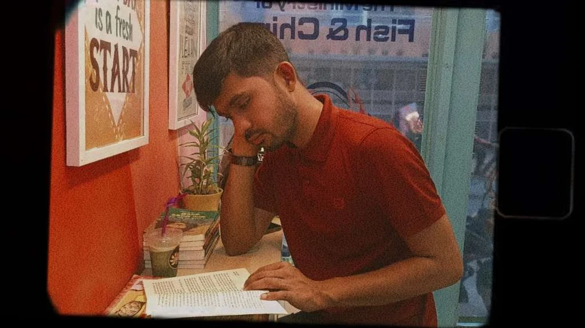
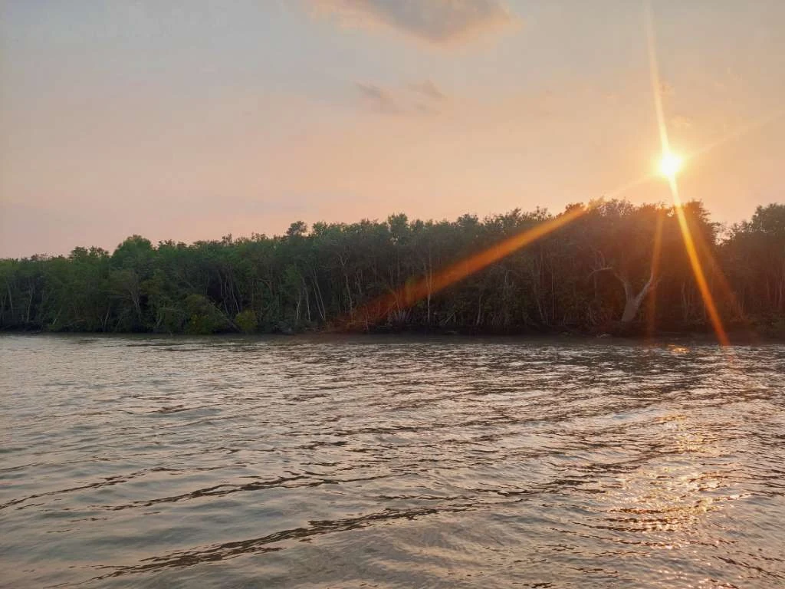

I started by asking
people questions.
Then I learned to ask
systems questions.

Journalism taught me to listen, verify and explain. Development research taught me to work with communities, evidence and uncertainty. Banking taught me documentation, governance and execution. Consulting forced all of it to become useful.
Stories first.
My formal background began in Journalism and Media Studies. Reporting and editorial work trained me to find the signal inside a lot of information, ask better questions and write for people who were not inside the room.
That discipline still sits underneath everything I do — even when the output is a dashboard, a policy note or a technical architecture deck.

Then the work moved into climate and communities.
At ICCCAD, I worked across displacement, locally led adaptation, migrant-friendly towns, urban nature-based solutions, regional knowledge exchange, youth and capacity building. The work involved vulnerability assessment, field and desk research, training, stakeholder coordination, reports, policy dialogue and adaptation planning.
One of the strongest lessons was that evidence is only useful when people can act on it. That shaped how I think about research today.

Coastal Bangladesh shaped much of my early thinking about climate risk, adaptation and the distance between policy and lived reality.
Research met institutions.
At NRBC Bank, I worked across communication and the Training Institute. At Mutual Trust Bank, my current work sits around CSR project planning, implementation monitoring, MIS tracking, payment documentation, stakeholder follow-up and Bangladesh Bank reporting support.
The environment is different from research, but the core habits are familiar: accuracy, traceability, coordination and clear decision-ready information.
Consulting made the range visible.
Across 300+ independent projects, I have worked on market research, data mining, competitor and pricing analysis, scraping, dashboards, data QA, scientific data curation, academic research support, technical decks and automation workflows.
I do not treat that range as a list of unrelated skills. The pattern is the same: understand the question, establish the evidence, structure the mess and build something another person can use.